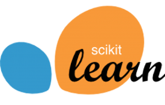

Introduction
Machine Learning is a form of Artificial Intelligence that gives computers the ability to learn from sets of data without explicitly programming them. By learning from one set of data, behaviours and patterns can be discovered and used to process new, unseen data. In other areas of computer science prior knowledge of relationships and patters are needed so that they can be hardcoded into the computer programs. This makes areas such as facial recognition a lot harder as specific hardcoded rules are needed for processing the data. With machine learning the computer learns these rules itself and applies them to the data to produce results that would be hard to achieve using other methods.
Machine learning works best when there is a large amount of data to learn from and as such it is most prevalent in areas where there are vast amounts of data to work with. Today, machine learning is used in such things as self driving cars, cybersecurity, banking chatbots, and image recognition.
This workshop aims to introduce machine learning to an audience who has not previously encountered it. An overview of some of the most common techniques in machine learning is given and practical exercises using these techniques are set.
While no previous knowledge of machine learning is expected, knowledge of Python is required as the practical exercises use Python.
Installation
VirtualBox
A virtual machine image is provided here that has the required packages preinstalled, as well as the workshop content. This is the recommended install method as it is the quickest and easiest way to get set up and running.
On Your Own machine
The packages and workshop content can be installed on your own machine if that is preferred to using a virtual machine.
Full Install
The easiest way to install all the required packages on your own machine is to install them as follows:
- Anaconda: Download Anaconda here and install it.
- Git: If not already installed, either download git and install it from here, or install it using a package manager.
- Wget: If this is not already installed then download and install wget from here.
- TensorFlow: Install TensorFlow for Python by using the pip command
"pip install tensorflow".
- Graphviz: Install Graphviz for Python by using the pip command
"pip install graphviz".
Minimal Install
If space is a concern then a minimal install can be done by installing the following:
- Miniconda: Download and install Miniconda from here.
- Git: If not already installed, download and install git from here, or install it using a package manager.
- wget: If this is not already installed then download and install wget from here.
- Pip: Install pip with the command
"conda install pip".
- Scipy: Install Scipy with the pip command
"pip install scipy".
- Matplotlib: Install Matplotlib with the pip command
"pip install matplotlib".
- Jupyter Notebook: Install the Jupyter Notebook with using the pip command
"pip install jupyter".
- Scikit-learn: Install Scikit-Learn by using the pip command
"pip install scikit-learn".
- TensorFlow: Install TensorFlow by using the pip command
"pip install tensorflow".
- Pydotplus: Install Pydotplus by using the pip command
"pip install pydotplus".
- Graphviz: Install Graphviz for Python by using the pip command
"pip install graphviz".
Note: If any packages are missing install them with "pip install <package-name>".
Workshop Material
The workshop material comes already downloaded in the virtual machine, though it can also be downloaded from here.
Structure
The workshop material is structured with a parent directory containing a PowerPoint presentation of the workshop slides, a pdf of these slides, and a subdirectory of the practical exercises. There is also a readme that can be found in the parent directory that gives a very brief overview of the requirements.
The Practicals subdirectory contains a directory for each of the three practical exercises which are mentioned in the slides.
Useful Links